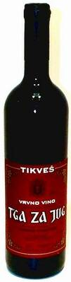

Makedonska vina
Većina nas zna, ali je za njih mnogo bolje to što i Business Week zna da u Makedoniji ima dobrih vina:
No one will ever mistake Kavardaci for Burgundy...Yet Kavardaci should be on the radar of anyone looking for the next big thing in European wine.
A stigli su i do suseda:
From Herzegovina in the west to Macedonia in the east, the territories of the former Yugoslavia are ideal for making wine, with hot, dry summers and rocky slopes where grapevines thrive.
If only Balkan politics and history had been as kind to these vineyards as the soil and the sun. Over the past 15 years, events have dealt blow after blow to a winemaking tradition that goes back thousands of years.
Tu negde, usput, pominjali su i nas.
A jedan stariji tekst, iz domaćeg Ekonomista, govori i o proizvodnji šampanjca u Makedoniji (mada bi po mnogima taj termin trebalo preciznije koristiti).
Što se tiče stihova T'ge za jug, zahvaljujući Burekeaters u njima možete uživati na tri jezika.
U vinu itself, na jednom. Naravno.
Komentari
etotako | 23.03.07 20:54
Ja sam jedan od onih nesrećnika koje od crnog često raz-bi-ja glavudža. :( Ima Vikipedija tekstić i o toj problematici (valjda će da radi ovaj link, radi u preview modu)...
 RSS feed
RSS feed
 sadržaji se objavljuju pod
sadržaji se objavljuju pod
Komentari
Zbog tehničkih problema komentari stigli do početka jula 2007. su sada u okviru teksta
Yahti | 02.08.07 13:14